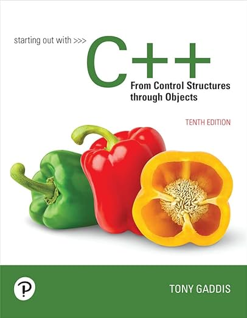
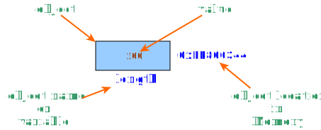
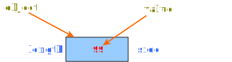
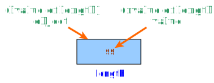
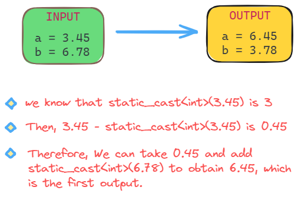

Lecture 1: Review - Part 1

- Reference: Starting out with C++ from Control Structure through Objects
- by Tonny Gaddis,
- 10th Edition.
Overview of Programming
We start this review with a quote from very famous computer scientist:
Programming is learned by writing programs
Brian Kernighan
Indeed! If you want to be professional in programming, then you must spend a lot of time (really a lot of time) writing several programs in front of a PC/laptop. Writing codes in a paper is not sufficient. You must write and run your programs. The purpose is to get familiar with programming environment and give you a feel of how you can get a computer to do things for you.
Programming
Programming is the activity of writing and testing programs
The figure below shows a very basic view of the program development process. Generally, programming involves two activities: writing and testing. After designing your algorithm, you go through the following steps:
flowchart LR
S1[Edit] --> S2[Compile] --> C1{error?} -- No --> S3[Run a test] --> C2{Pass?} -- Yes --> C3{Another test?} -- No --> F(Done)
C1 -- Yes --> S1
C2 -- No --> S1
C3 -- Yes --> S3- Edit your program and save it in a source file,
- Compile the source file to find any syntax error; if there is one, you return back to Step (1) to fix it. The compiler will emit an error message to guide you on how to fix the error. If the source file has compiled successfully, an executable file would be generated.
- Prepare a list of test cases to cover all execution paths to examine the logic of your algorithm.
- Pick one test case and run your program. If your program outputs unexpected result (i.e., the test case is failed), which indicates a logical error, then you need to go back to Step (1). Sometimes, you may need to return back to the very beginning and revise your algorithm.
- If your program passed all test cases, then you are done.
Debugging and IDE
You, as a programmer, must test your program thoroughly, comparing the expected results to those that actually occur. When defects are found, they must be traced back to the source of the problem in the code/algorithm and corrected. The process of finding and correcting defects in a program is called debugging. Logical errors can manifest themselves in many ways, and the actual root cause might be difficult to discover.
A software development environment is a set of tools used to create, compile, run, test, and modify a program. Some environments are referred to as integrated development environment (IDE) because they integrate various tools into one software program and provide a convenient graphical user interface (GUI). Most IDEs are shipped with a debugger tool, which helps you to debug your programs.
Tip
You must be familiar with this tool.
Semantics
One final remark before proceeding to the next section is that writing and debugging require you to be fully aware of statements’ semantics.
Semantics of a statement
The semantics of a statement in a programming language define what will happen when that statement is executed
Programming languages are generally unambiguous, which means the semantics of a program are well defined. That is, there is one and only one interpretation for each statement. For example, consider the highlighted line:
int length ; // define a variable of type int
length = 99; // What is the semantics of this statement? (1)
- Put 99 to the object named by
length.
Here, as the left–hand side of the assignment statement, length means "the object named by length," so that the assignment statement is read "Put 99 into the object named by length."
C++ Program Structure
// this program outputs the message " Hello World !" to the monitor
# include <iostream>
using namespace std;
// MAIN function
int main ()
{
cout << " Hello World !" << endl ;
return 0;
}
Exercises
- Why are the following not comments?
- What is the difference between:
- What is the difference between:
- Correct the following code without using the keywords
usingandnamespace:
-
(a) It should be either
//or/* */. (b) There should be no space between*and/at the end. (c)//is a line comment. So, the second line should also begin with// -
No difference.
<iostream.h>is an older header file corresponding to the new header file<iostream>. -
(a) This is the old header name for
<cstring>. (b) This is to include C-style string library. (c) This is to include C++ string library. - The corrected code is:
Data Types and Expressions
Recall the following. It is important to understand and remember each definition
Definitions
- A type defines a set of possible values and a set of operations defined on them.
- An object is some memory that holds a value.
- A value is a set of bits in memory interpreted according to a type.
- A variable is a named object.
- A declaration is a statement that gives a name to an object along with a type.
- A definition is a declaration that sets aside memory for an object.
Examples
What is the semantics of:

This is a definition statement:
- It creates a new object by allocating four-byte memory. (1)
- The new object will be named
length. - The data type of
lengthisint. - The object will be initialized with the value of 100.
- I am assuming the size of
intis 4 bytes
Be aware of the highlighted text above. The object will be initialized, not assigned.
What is the semantics of:
This is an assignment statement. It means to put/assign the value 99 into/to the object named bylength.
What is the semantics of:

Semantically, this is a declaration statement. It means as follows. The object named by length has a new (another) name, which is side, as shown. Consequently, we have ONE object that can be referenced by two names: side and length.
What is the semantics of:

This is a definition statement:
- It creates a new object by allocating four-byte memory.
- The new object will be named
side. - The data type of
sideisint. - The object will be initialized with the value of
length.
Data Types
- Built-in data types:
- Ordinal types:
int,char.- C++11 signed integer types:
int8_t,int16_t,int32_t,int64_t. - C++11 unsigned integer types:
uint8_t,uint16_t,uint32_t,uint64_t.
- C++11 signed integer types:
- Boolean type:
bool. - Floating-point types:
float,double. - String type:
string
- Ordinal types:
- Type modifiers:
- Sign modifiers (for ordinal types):
signed,unsigned. - Size modifiers:
short,long,long long. - Storage modifiers:
static,const,auto
- Sign modifiers (for ordinal types):
- Type specifier:
auto
Constants and Literals
-
Integer constants:
- Decimal constants (
int):3,-40or12024 - Binary constants (
int):0b101001011or0b1010'0111 - Octal constants (
int):023 - Hexadecimal constants (
int):0x1Aor0x1a - Unsigned constants:
123u,123U, or0xFFFFu - Long constants:
123l,123Lor0xFFFFL - Unsigned long constants:
123ul,123ULor0xFFFFUL
- Decimal constants (
-
Character constants (type is
char)- Letters:
'a','B','+'or' ' - Escape sequence:
'\t','\r','\n','\0','\x20'or\101
- Letters:
- Floating-point constants:
1.2,2.001,-0.0234,9e-5or-2.34E3- No suffix defines
double forFdefinesfloatlorLdefineslong double
- No suffix defines
- Boolean constants:
true,false. - Recall that literals are named constant
- Example (1):
const int LENSIZE = 10;HereLENSIZEis a constant integer with value10. - Example (2):
constexpr double PI = 3.14159;
- Example (1):
Expressions
- The most basic building block of programs.
- An expression can be:
- a constant,
- a variable (must have a value),
- a function call,
- an arithmetic operation, or
- a logical operation that evaluates to TRUE or FALSE
- The type of an expression is the type of its value
What is an operation?
An operation is composed of a set of operands and a set of operators. The operation is parsed according to the operator(s) priority and associativity. Each operand by itself is an expression.
The expression std::cout << a & b is parsed as ( (std::cout << a) & b), and not as
( std::cout << (a & b) )
Example 1
Consider the following expression: 10 + 2 / 4.
Simply, this expression consists of three operands (10, 2, and 4) and two operators (+ and /). It will be parsed (eventually, evaluated) as follows:
Example 2
In these examples, we will revise the principle of associativity.
Consider the following expression: 10 / 2 / 4
Consider the following expression: x = y = 10
The following table shows the precedence and associativity of C++ operators (from highest to lowest precedence). Operators with the same precedence number have equal precedence unless another relationship is explicitly forced by parentheses.
| Group | Description | Operator |
|---|---|---|
| Group 1: | no associativity | |
| scope resolution | :: |
|
| Group 2: | Naturally left to right associativity | |
| Array subscript | [] |
|
| Function call | () |
|
Postfix increment (i.e., a++) |
++ |
|
Postfix decrement (i.e., a--) |
-- |
|
| Type name | typeid |
|
| Constant type conversion | const_cast |
|
| Dynamic type conversion | dynamic_cast |
|
| Reinterpreted type conversion | reinterpret_cast |
|
| Static type conversion | static_cast |
|
| Group 3: | Naturally right to left associativity | |
| Size of object or type | sizeof |
|
Prefix increment (i.e., ++a) |
++ |
|
Prefix decrement (i.e., --a) |
-- |
|
| One's complement or bitwise NOT | ~ |
|
| Logical NOT | ! |
|
| Unary negation | - |
|
| Unary plus | + |
|
| Address of | & |
|
| Indirection (dereference) | * |
|
| Create object | new new[] |
|
| Destroy object | delete delete[] |
|
| C-style cast | () |
|
| Group 4: | left to right associativity | |
| Pointer-to-member (objects or pointers) | .* ->* |
|
| Group 5: | left to right associativity | |
| Multiplication | * |
|
| Division | / |
|
| Modulus | % |
|
| Group 6: | left to right associativity | |
| Addition | + |
|
| Subtraction | - |
|
| Group 7: | left to right associativity | |
| Left shift | << |
|
| Right shift | >> |
|
| Group 8: | left to right associativity | |
| Less than | < |
|
| Greater than | > |
|
| Less than or equal to | <= |
|
| Greater than or equal to | >= |
|
| Group 9: | left to right associativity | |
| Equality | == |
|
| Inequality | != |
|
| Group 10: | left to right associativity | |
| Bitwise AND | & |
|
| Group 11: | left to right associativity | |
| Bitwise XOR (exclusive OR) | ^ |
|
| Group 12: | left to right associativity | |
| Bitwise OR (inclusive OR) | | |
|
| Group 13: | left to right associativity | |
| Logical AND | && |
|
| Group 14: | left to right associativity | |
| Logical OR | || |
|
| Group 15: | right to left associativity | |
| Conditional | ?: |
|
| Assignment | = |
|
| Multiplication assignment | *= |
|
| Division assignment | /= |
|
| Modulus assignment | %= |
|
| Addition assignment | += |
|
| Subtraction assignment | -= |
|
| Left-shift assginment | <<= |
|
| Right-shift assignment | >>= |
|
| Bitwise AND assignment | &= |
|
| Bitwise inclusive OR assignment | |= |
|
| Bitwise exclusive OR assignment | ^= |
|
| throw expression | throw |
|
| Group 16: | left to right associativity | |
| Comma | , |
Order of evaluation
Consider the following expression a() + b() / c()
During the compile-time, a() will be parsed as function call. Then, b() will be parsed as function call. Then c() is parsed as function call. Then, division is parsed. Finally addition is parsed. So, the compiler will produce (call(a) + ( call(b) / call(c) ) ).
During the run-time, the order of function calls, call(b) and call(c), is undetermined. call(c) may be evaluated first or second. So, the order of evaluation of function calls can be:
call(b)\rightarrowcall(c)\rightarrowcall(a), ORcall(c)\rightarrowcall(b)\rightarrowcall(a).
Exercises
-
What is the output of the following program?
-
What is the output of the following program?
-
The following fragment purports to convert from degrees Celsius to degrees Fahrenheit. However, it has an error. Fix the code.
-
Find the syntax errors in the following program and fix them, so that the program runs and displays
Nice. -
Is there an error in the following code segment? (What kind? syntactic or semantic), assume
xis declared asint: -
What is the output of the following program?
-
The following program reads three integers and displays their average. Is it written correctly?
-
What is the output of the following program? Note: There is no syntactic error.
- Check the answer by yourself (write and run)
- Write and run the code
- There is a logical error at
9/5, which always produces integer1. The code should be -
Yes!. There is a semantic error. The conditional expression will be parsed as
( (1 <= x) <= 10). Regardless of the value ofx, the conditional expression is always TRUE. The correct way to express that x between 1 and 10 is -
Write and run by yourself
- No, there is a logical error. The expression
i+j+k / 3will be parsed as( (i + j) + (k / 3) ). So the lastcout` should be: - Write and run by yourself
Scope and Lifetime
In a nutshell, the term scope is associated with variables, while lifetime (sometimes we say storage duration) is associated with objects. A variable could have a local scope or global scope. Similarly, an object could have a local lifetime or global lifetime. Consider the following illustrative example:
- The variable
dayshas a global scope. So, the name is visible from line 1 up to line 16. - The object referenced by
dayshas a global lifetime. So, the object's life starts when the program starts executing and ends when the program terminates. In other words, the object will be created (or constructed) when the program starts and destroyed when the program terminates. - The variable
weekis visible only within its block (i.e., from line 5 up to line 8). The life of the object referenced byweekstarts when the program executes line 5 and ends when the execution reaches line 8. - The variable
tis visible within the function block (i.e., from line 11 up to line 16). The life of the object referenced bytstarts whenever the program invokes the functionmyfuncand ends when the function returns. - The variable
monthis visible only within its block (i.e., from line 12 up to line 16). The life of the object referenced bymonthstarts whenever the program executes line 12 and ends when the function returns. - The variable
nexthas a local scope (i.e., it's visible from line 13 up to line 16). However, the object referenced bynexthas a global lifetime, due to the keywordstatic. This implies that the object will be created ONLY ONCE, when the program executes the function for the first time. The object will be destroyed when the program terminates.
Exercise
What is the output of the following program?
Lvalue and Rvalue
One of the fundamental C++ concepts is the concept of value category, which we are going to explain it very briefly.
Every C++ expression has a type, and belongs to a value category. The value categories are the basis for rules that compilers must follow when creating, copying, and moving temporary objects during expression evaluation.
In this course, we focuses on two value categories: Lvalue and Rvalue.
- Lvalue is an expression whose evaluation determines the identity of an object
- Rvalue is an expression whose evaluation:
- computes the value of an operand of a built-in operator (such rvalue has no result object), or
- initializes an object (such rvalue is said to have a result object).

Let us consider the variable length that contains the value 99 as shown in the figure. The lvalue of length represents the object itself or its memory location, while the rvalue of length represents its content or its value.
Assignment statement
The left-hande side of an assignment is always treated as lvalue and the right-hand side is treated as rvalue.
Example
- The right-hand expression, which is
y, will be treated as rvalue. The left-hand expression, which isx, will be treated as lvalue. - The rvalue of
yis its content (or the value ofy). The lvalue ofxis its memory location or the object referenced byx. - Consequently, the meaning (or semantics) of this statement is as follows: Put the value of
yinto the object named byx.
Example
If you try to compile the above statement, the compiler will throw an error message:
lvalue required as left operand of assignment.
Because the expression x + 1 can't be an lvalue. No memory location associated with this expression.
Example
The left-hand side, which is the conditional operator, is a valid lvalue expression, since its lvalue is either the memory location of x or the memory location of y. The right-hand side, which is 10, is a valid rvalue. The conditional operator has the inner expression (x < 5), where x will be treated as rvalue. Therefore, the semantics is as follows. If the value of x is less than 5, put the value 10 into x. Otherwise, put the value 10 into y.
Initialization and Assignment
You need to distinguish two similar, but logically distinct, operations:
- Initialization (giving a variable its initial value at the time of construction)
- Assignment (giving a variable a new value)
These operations are so similar that C++ allows us to use the same notation (the = operator) for both.
Let us consider the following code:
There is no doubt that the operator =, in line 4, is the assignment operator. It puts the value 10 into the object named by width. However, the operator =, in line 1, is NOT the assignment operator. The form = 99 is known as an initializer. It means that as part of constructing the object named by length, the value 99 will be inserted, such that after the construction finishes, the variable length will have the initial value 99.
In C++, the initializer may be one of the following forms:
(expression-list)=expression{initializer-list}{designated-initializer-list}
Therefore, initialization can be written as follows:
int length = 99; // using the second formorint length (99); // using the first formorint length {99}; // using the third form
Important
The initialization operation occurs at the time of object's construction. It also takes place during function calls: when passing arguments and when the function returns values.
Exercises
-
Write a program that declares two floating-point variables (e.g.,
a,b), assigns to them two positive values (e.g.,3.45and6.78) and swaps their integer parts (i.e.,abecomes6.45andbbecomes3.78). For casting, use thestatic_cast<>operator. -
Write a program that reads three integers, stores them in three variables, and rotates them one place right. For example, if the user enters the numbers
1,2, and3and they are stored in variablesa1,a2anda3, the program should rotate their values one place right, so thata1becomes3,a2becomes1, anda3becomes2. -
Write a program that reads a three-digit positive integer, makes its hundreds ones and vice versa and displays the new number. For example, if the user enters
123, the program should display321. Use only one variable. -
Write a program that reads a positive integer and rounds it up or down to its nearest tens. For example, if the user enters
13, the program should display10. if the input number is6, the program should display10, while if it is255, the program should display260. For casting, use thestatic_cast<>operator.
-

#include <iostream> int main() { float a = 3.45, b = 6.78; double dec; int temp = static_cast<int>(a); // store integer part of a dec = a - static_cast<int>(a); // decimal part of a a = static_cast<int>(b) + dec; dec = b - static_cast<int>(b); // decimal part of b b = temp + dec; std::cout << "a = " << a << ", b = " << b << std::endl; return 0; }